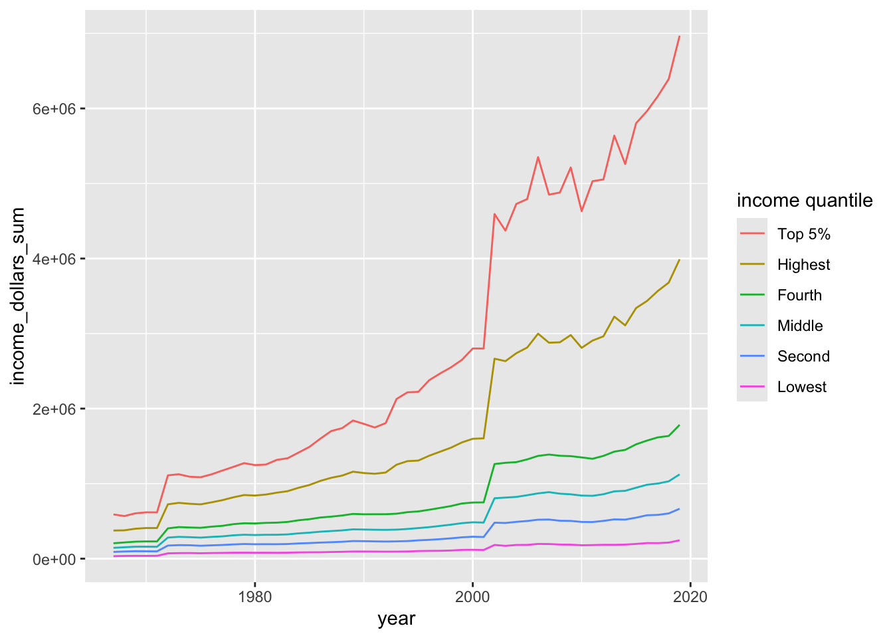

Rows: 3708 Columns: 5
── Column specification ────────────────────────────────────────────────────────
Delimiter: ","
chr (3): race, dollar_type, income_quintile
dbl (2): year, income_dollars
ℹ Use `spec()` to retrieve the full column specification for this data.
ℹ Specify the column types or set `show_col_types = FALSE` to quiet this message.
What is a factor A factor is a specialized version of a character. It is how we truly store categorical data. The values that a factor takes are called levels. These levels allow you to order your data in specific ways. The default levels are always alphabetical. So, we need to learn how to use factors appropriately and reorder them to be specific to our analyses.
Importantly, once you convert a character into a factor, R is actually storing them as integers (i.e., 1,2,3,4…). If you are not careful this can lead to a lot of headache… but, this is how you can put your characters in a specific order.
To make something a factor you put the vector in the function factor()
Levels = order in which it will plot or summarize.
factor booby-traps! When can this be scary…
Let’s say you had a typo in a column of what was suppose to be numbers. R will read everything in as characters. If they are characters and you try to covert it to a number, the rows with real characters will covert to NAs
test<-c("A", "1", "2")as.numeric(test)
Warning: NAs introduced by coercion
[1] NA 1 2
If test was a factor:
# test<-factor(test) # covert to factor# as.numeric(test)
So, this would give you data that never should have existed.
So, factor store everything as integers in the background and make sure only use factors when you need to (categorical data) and use characters when you’re not trying to order or organize the data.
Reading in data safely
These types of factor booby-traps are why there was a big push to remove the automatic import of strings as factors.
If you read in your data as read.csv() then all your strings will be automatically read in as factors, if you use read_csv() strings will be read as characters.
{forcats}
The forcats package is a family of functions for categorical data. All the main functions start with fct_ and then some kind of a verb.
Let’s start with the starwars dataset to learn about how to use factors
starwars
Let’s look at some information by different species in the starwars films. How many individuals of each species are present across (whole dataset) all starwars films?
starwars %>%filter(!is.na(species)) %>%# remove the NAscount(species, sort =TRUE) # count species and sort by true (how many unique species and how many charcters from each)
# A tibble: 37 × 2
species n
<chr> <int>
1 Human 35
2 Droid 6
3 Gungan 3
4 Kaminoan 2
5 Mirialan 2
6 Twi'lek 2
7 Wookiee 2
8 Zabrak 2
9 Aleena 1
10 Besalisk 1
# ℹ 27 more rows
Shows us dominant species and how many of each.
Let’s say we wanted to lump every species together that has less than 3 individuals into an “Others” category for some plot where you focus on dominant species and everything else is “other”.
There are 38 unique species, but most are really rare. Let’s say we wanted to lump all the species together that had less than 3 (rare species) individuals. We could use fct_lump() which converts the data into a factor and lumps it together
star_counts<-starwars %>%filter(!is.na(species)) %>%mutate(species =fct_lump(species, n =3)) %>%# lumping species so that anything less than 3 is into othercount(species) # everything greater into a factorstar_counts
# A tibble: 4 × 2
species n
<fct> <int>
1 Droid 6
2 Gungan 3
3 Human 35
4 Other 39
Now a factor instead of a character. Default is in alphabetical order. Notice the order is not in alphabetical order because it is now a factor
reordering factors A basic ggplot
star_counts %>%ggplot(aes(x = species, y = n))+geom_col()
Would be more helpful to view in order of lowest to highest…
A basic ggplot, in order (make it descending)
star_counts %>%ggplot(aes(x =fct_reorder(species, n, .desc =TRUE), y = n))+# reorder the factor of species by n geom_col() +labs(x ="Species")
fct_reorder: First thing is what you want to reorder specifically, and what you want to reorder it by.
reordering line plots
Let’s say you wanted to make a line plot and reorder the legend (colors) to match the order of the lines (x-axis). We will use the income_mean dataset to illustrate this.
We will make a plot of the total income by year and quantile across all dollar types.
total_income<-income_mean %>%group_by(year, income_quintile)%>%# group by year and income quintilesummarise(income_dollars_sum =sum(income_dollars)) %>%# sum of all the dollars across all dollar typesmutate(income_quintile =factor(income_quintile)) # make income_quintile a factor
`summarise()` has grouped output by 'year'. You can override using the
`.groups` argument.
Basic line plot:
total_income%>%ggplot(aes(x = year, y = income_dollars_sum, color = income_quintile))+geom_line()
Notice the legend order…. Would be more helpful if it is sorted.
It is in alphabetical order so it doesn’t make sense.
We can reorder line plots by using fct_reorder2, which reorders the data by two variables.
total_income%>%ggplot(aes(x = year, y = income_dollars_sum, color =fct_reorder2(income_quintile,year,income_dollars_sum)))+# order it by x and colorgeom_line()+labs(color ="income quantile")

This is for reordering multiple things (fct_reorder2).
Taking income_quintile and first reordering it by year (lowest to highest), then at the last year it is going to take the income dollar sum and use it to sort the order of the colors.
Important when using legends.
reorder levels directly in a vector because I said so
Let’s say we have a vector and we want to put it in a specific order that we say. Not necessarily because its the largest or smallest value
x1 <-factor(c("Jan", "Mar", "Apr", "Dec"))x1
[1] Jan Mar Apr Dec
Levels: Apr Dec Jan Mar
Didn’t use lubridate package to tell its a month.
This order is probably not what we want… You can set the specific order of the levels.
Specify specific order of the levels that you want within the factor function.
subest data with factors
Back to starwars. Let’s say we instead of grouping our species that have < 3 counts into “Other” we just filter them out.
starwars_clean<-starwars %>%filter(!is.na(species)) %>%# remove the NAscount(species, sort =TRUE) %>%# counted and sorted from highest to lowestmutate(species =factor(species)) %>%# make species a factorfilter(n>3) # only keep species that have more than 3starwars_clean
# A tibble: 2 × 2
species n
<fct> <int>
1 Human 35
2 Droid 6
All 38 species are still there.
Even though we deleted the data by filtering it out. The levels of all of those past history still exists. So need to add a pipe to drop levels any time you filter anything out.
Anytime you work with factors and do any manipulation to it, always add droplevels() so no secret levels show up
Only the data that we subsetted are in the dataframe, but all the levels from all possible factors are still there… this causes all sorts of problems when you go to plot. Using either fct_drop() within mutate() or droplevels() (the latter is in base R), we can remove any extra levels not included in the dataframe
starwars_clean<-starwars %>%filter(!is.na(species)) %>%# remove the NAscount(species, sort =TRUE) %>%mutate(species =factor(species)) %>%# make species a factor filter(n>3) %>%# only keep species that have more than 3 droplevels() # drop extra levels
levels(starwars_clean$species)
[1] "Droid" "Human"
recode levels
If you want to rename (or recode) a level. For example, lets recode Human to Humanoid.
starwars_clean<-starwars %>%filter(!is.na(species)) %>%# remove the NAscount(species, sort =TRUE) %>%mutate(species =factor(species)) %>%# make species a factor filter(n>3) %>%# only keep species that have more than 3 droplevels() %>%# drop extra levels mutate(species =fct_recode(species, "Humanoid"="Human"))starwars_clean
# A tibble: 2 × 2
species n
<fct> <int>
1 Humanoid 35
2 Droid 6
Recode the name by putting old name on right and new name on left.
Use fct_recode
Homework Working with intertidal data. Today you will need to use skills that you have learned in working with words to clean up some issues with the character data and use what you learned today to reorder your factors into orders that make sense. (Also the column headers could be better…). HINT: New package idea to fix this is using the janitor package.
Your goal, as per usual, is to make a plot, any plot where one of the axes is a factor. Save everything in the appropriate folders.
You have two possible files to play with in the data folder (you don’t HAVE to use both): intertidal.csv and intertidal_latitude.csv (as well as a data dictionary)
Importantly, if you decide to visualize anything by tide height it should go from low to mid to high tide on the plot and if you decide to visualize by site it should go in order of latitude (e.g. south to north or north to south).